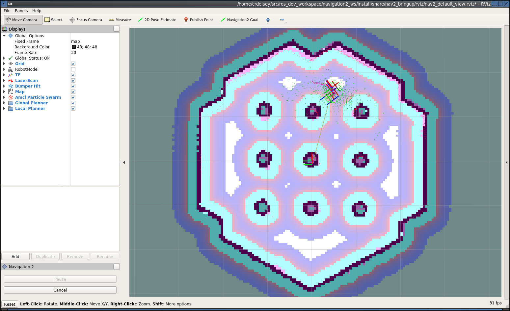

Getting Started¶
This document will take you through the process of installing the Navigation 2 binaries and navigating a simulated Turtlebot 3 in the Gazebo simulator. We’ll use the Dashing version of ROS 2, since it is the latest stable version at the time this was written. The instructions are written primarily for Ubuntu 18, using the standard installation options.
Note
See the How-Tos for other situations such as building from source or working with other types of robots.
Warning
This is a simplified version of the Turtlebot 3 instructions. We highly recommend you follow the official Turtlebot 3 manual if you intend to continue working with this robot beyond the minimal example provided here.
Installation¶
Install the ROS 2 binary packages as described in the official docs
Install the Navigation 2 packages using your operating system’s package manager. For Ubuntu 18, do this:
sudo apt install ros-dashing-navigation2 sudo apt install ros-dashing-nav2-bringup
Install the Turtlebot 3 packages. Again, for Ubuntu 18, it looks like this:
sudo apt install ros-dashing-turtlebot3*
Running the Example¶
Start a terminal in your GUI
Set key environment variables. Here’s how to do it in Ubuntu.
source /opt/ros/dashing/setup.bash export TURTLEBOT3_MODEL=waffle export GAZEBO_MODEL_PATH=$GAZEBO_MODEL_PATH:/opt/ros/dashing/share/turtlebot3_gazebo/models
In the same terminal, run
ros2 launch nav2_bringup nav2_tb3_simulation_launch.py
If everything has started correctly, you will see the RViz and Gazebo GUIs like this.

Figure 1 Initial appearance of RViz before hitting startup button. Nothing is displayed at this point because Navigation 2 is still in the unconfigured state

Figure 2 Initial appearance of Gazebo with Turtlebot 3 world
Click the “Startup” button in the bottom left corner of RViz. This will cause Navigation 2 to change to the Active lifecycle state. It should change appearance to show the map.

Figure 3 Initial appearance of RViz transitioning to the Active state
Navigating¶
After starting, the robot initially has no idea where it is. By default, Navigation 2 waits for you to give it an approximate starting position. Take a look at where the robot is in the Gazebo world, and find that spot on the map. Set the initial pose by clicking the “2D Pose Estimate” button in RViz, and then down clicking on the map in that location. You set the orientation by dragging forward from the down click.
If you are using the defaults so far, it should look like this.

Figure 4 Approximate starting location of Turtlebot
If you don’t get the location exactly right, that’s fine. Navigation 2 will refine the position as it navigates. You can also, click the “2D Pose Estimate” button and try again, if you prefer.
Once you’ve set the initial pose, the trasform tree will be complete and Navigation 2 is fully active and ready to go.

Figure 5 Navigation 2 is ready. Transforms and Costmap show in RViz.
Click the “Navigaton2 Goal” button and choose a destination.

Figure 6 Setting the goal pose in RViz.
Watch the robot go!
Figure 7 Turtlebot on its way to the goal.
{kind=link}